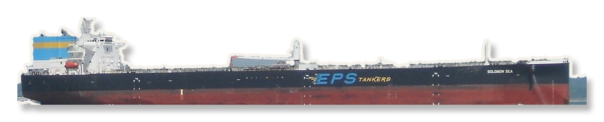

MALAYSIA
INDONESIA
1.5 NAUTICAL MILES
ONE GATE
NO SECOND ROUTE
THE NARROWEST POINT
1.5
NM ·
2.8
KM
AT SINGAPORE —
NO ROOM TO PASS SIDE BY SIDE

WATER SURFACE
SEABED · 25 M DOWN
FULLY LOADED
SUPERTANKER
HULL SITS 20.5 M UNDERWATER
4.5 M
WATER LEFT
UNDER THE HULL
SUNDA · 20 M DEEP
LOMBOK · MAKASSAR
IF THE STRAIT CLOSED
YOU CANNOT
WIDEN
A
STRAIT
@IRinANutshell